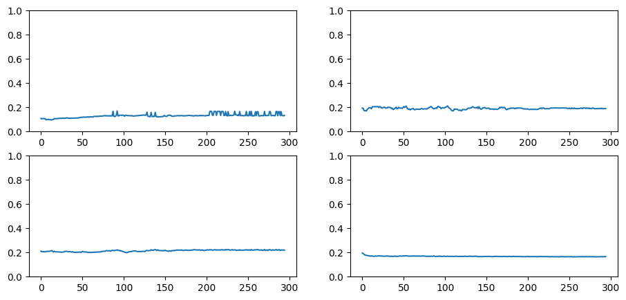

def _lr(cb): return cb.pg['lr'] # Callback that will allow us to record LR during learning.
Preparing the learner for training.
Code for learner. (click to show/hide)
act_gr = partial(GeneralRelu, leak=0.1, sub=0.4)metrics = MetricsCB(accuracy=MulticlassAccuracy())astats = ActivationStats(fc.risinstance(GeneralRelu))cbs = [DeviceCB(), metrics, ProgressCB(plot=True), astats]iw = partial(init_weights, leaky=0.1)set_seed(42)lr,epochs =1e-2,5model = get_model(act_gr, norm=nn.BatchNorm2d).apply(iw)tmax = epochs *len(dls.train)sched = partial(CosAnnLR,tmax)#sched = partial(lr_scheduler.CosineAnnealingLR,T_max = tmax) # Testing if it works with pytorch's CosineAnnealingLR record = RecorderCB(lr=_lr)xtra = [BatchSchedCB(sched),record]learn = TrainLearner(model, dls, F.cross_entropy, lr=lr, cbs=cbs+xtra, opt_func=optim.AdamW)
Code
learn.fit(epochs)
accuracy
loss
epoch
train
0.806
0.529
0
train
0.853
0.404
0
eval
0.876
0.338
1
train
0.872
0.349
1
eval
0.892
0.295
2
train
0.882
0.326
2
eval
0.904
0.264
3
train
0.887
0.316
3
eval
0.910
0.248
4
train
0.887
0.310
4
eval
Code
record.plot()
Figure: Plot of learning rate throughout the learning process.
astats.color_dim()
Figure: Plot of Weight’s distribution.
astats.plot_stats()
Figure: Plot of Weight’s Means and Stdves throughout the learning process.
astats.dead_chart()

Figure: Plot of Weight’s that are = 0.
CosineAnnealing Summary.
After creating my own CosineAnnealing I decided to look for paper where it was introduced, and I found this paper.
Where we can find this equation. \[ \eta_{t} = \eta_{min}^{i} + \frac{1}{2}\left(\eta_{max}^{i}-\eta_{min}^{i}\right)\left(1+\cos\left(\frac{T_{cur}}{T_{i}}\pi\right)\right) \]
If we compared it to our code, it looks completely different.
(math.cos(cur_step/tmax * math.pi)+1)/2*lr
But if we read the paper further, the η and T could be translated to our code. Where: \[ \eta \text{ (eta) - is learning rate } \]\[ T_{cur} \text{ - is current step }\]\[ t_{i} \text{ - is our tmax}\]
The paper’s equation introduces min & max learning rate, therefore the difference. But the rest is the same.
OneCycleLR
CLR should specify minmum and maximum learning rate boundaries and a step_size,
but this implementation doesn’t do that.
Adding minimum and maximum should be pretty straight forward, tho.
You also might want to add a 3rd phase where learning rate is at its maximum for 5-10% of the training.